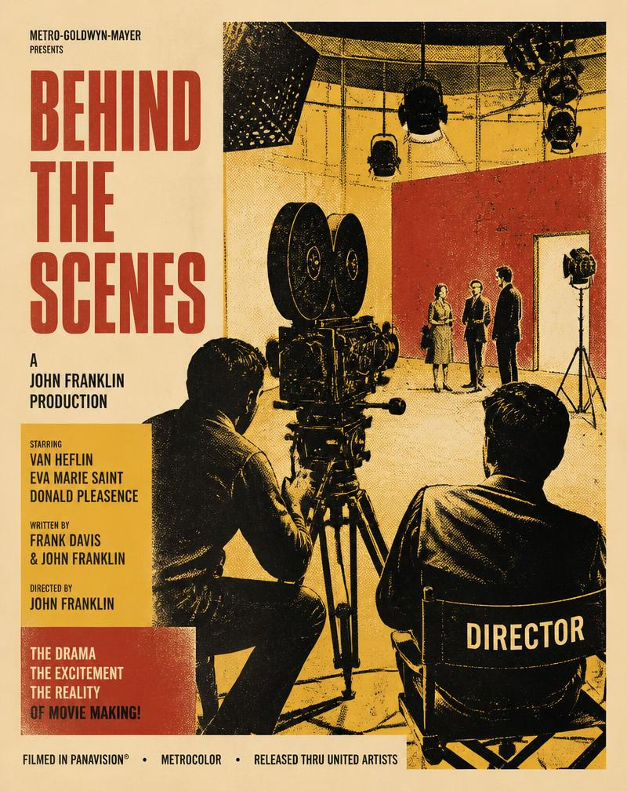
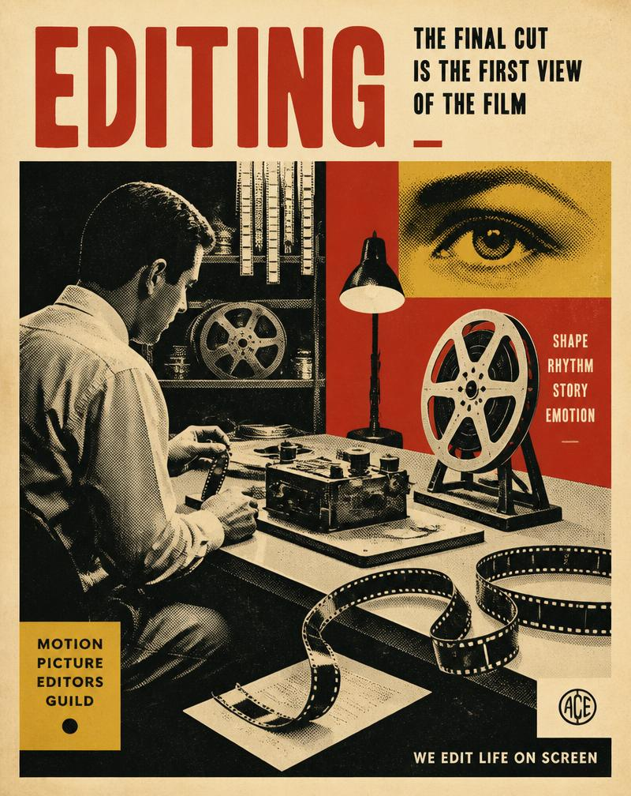
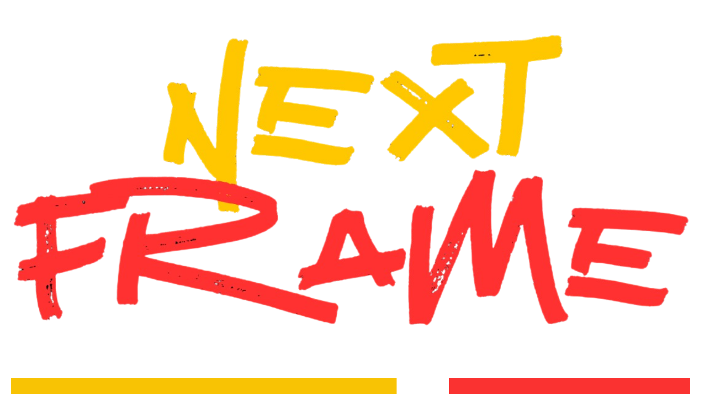

Tudo começa com os dados. A plataforma reúne informações de milhares de produções cinematográficas e
permite que o usuário explore esse histórico de forma simples e organizada. É possível pesquisar
filmes, aplicar filtros e comparar diferentes produções para entender como determinadas
características influenciaram seus resultados.
Para avaliar um novo projeto, o usuário informa características como gênero, orçamento estimado,
país e idioma. A plataforma utiliza essas informações para encontrar produções semelhantes e, a
partir delas, apresenta indicadores que ajudam a visualizar diferentes cenários. Os resultados são
organizados em dashboards, gráficos e métricas, incluindo estimativas de retorno e uma classificação
de risco.
Assim, o usuário consegue passar de uma ideia de produção para uma análise baseada no histórico do
mercado, tendo informações mais concretas para apoiar suas decisões.
Terror, Ação, Drama,
Comédia…
NF - 001
Nota média do
público
NF - 002
Custo declarado de
produção
NF - 003
Bilheteria acumulada
NF - 004
Origem da produção
NF - 005
Empresas envolvidas
NF - 006
O objetivo do projeto é apoiar produtoras cinematográficas no processo de avaliação e seleção de novos projetos, tornando a tomada de decisão mais estratégica e fundamentada em dados. A proposta é transformar informações históricas do mercado cinematográfico em indicadores que permitam compreender melhor o potencial de retorno e os riscos envolvidos em um investimento. Dessa forma, o projeto busca oferecer uma visão mais objetiva para que produtoras possam avaliar oportunidades, identificar padrões do mercado e tomar decisões com maior segurança antes de investir em uma nova produção.

Para auxiliar na avaliação de novos projetos.

Para utilizar dados como apoio à análise de produções.
Para observar padrões e características de diferentes filmes.
A Next Frame utiliza dados históricos do cinema para
transformar informações sobre filmes em análises
que ajudam a avaliar novas produções.
